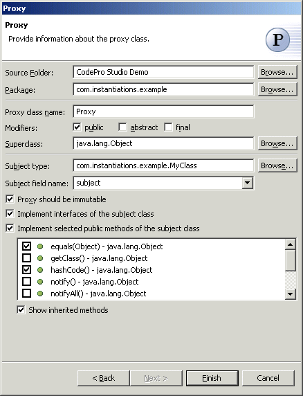

Proxy Pattern
Also known as: Surrogate
The  Proxy Pattern provides a surrogate or placeholder for another object to control access to
it. Options are provided to implement all interfaces of the subject class as well as all
of the public methods of the subject class.
Proxy Pattern provides a surrogate or placeholder for another object to control access to
it. Options are provided to implement all interfaces of the subject class as well as all
of the public methods of the subject class.
Wizard

| Option | Description | Default |
| Source folder | Enter a source folder for the new class. Either type a valid source folder path or click Browse to select a source folder via a dialog. | The source folder of the element that was selected when the wizard was started. |
| Package | Enter a package to contain the new class. Either type a valid package name or click Browse to select a package via a dialog. | The package of the element that was selected when the wizard has been started. |
| Proxy class name | Type a name for the new proxy class. | <Proxy> |
| Modifiers | Select one or more access modifiers for the new class.
|
public |
| Superclass | Type or click Browse to select a superclass for this class. | <java.lang.Object> |
| Subject type | Type or click Browse to select the class or interface for which the proxy will act as surrogate. | The type or the primary type of the compilation unit that was selected when the wizard was started |
| Subject field name | Type or select the name of the field that will contain the instance of the subject class. | <subject> |
| Proxy should be immutable | Determines whether the proxy will be immutable. | <true> |
| Implement interfaces of the subject class | Determines whether the interfaces of the subject class will be implemented. | <true> |
| Implement selected public methods of the subject class | Determines whether the selected public methods of the subject class will be implemented. | <false> |
Applicability
Proxy is applicable whenever there is a need for a more versatile or sophisticated reference to an object than a simple pointer. Here are several common situations in which the Proxy pattern is applicable:
- A remote proxy provides a local representative for an object in a different address space.
- A virtual proxy creates expensive objects on demand.
- A protection proxy controls access to the original object. Protection proxies are useful when objects should have different access rights.
- A smart reference is a replacement for a bare pointer that performs
additional actions when an object is accessed. Typical uses include
- counting the number of references to the real object so that it can be freed automatically when there are no more references.
- loading a persistent object into memory when it's first referenced.
- checking that the real object is locked before it's accessed to ensure that no other object can change it.
Additional Resources
http://c2.com/cgi/wiki?ProxyPattern